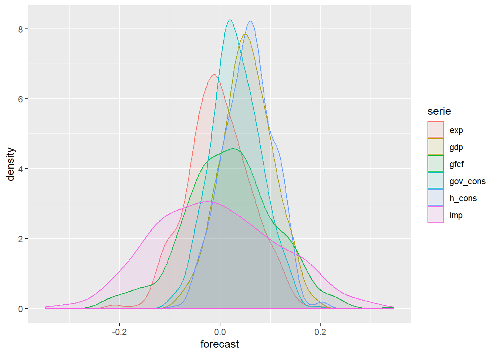
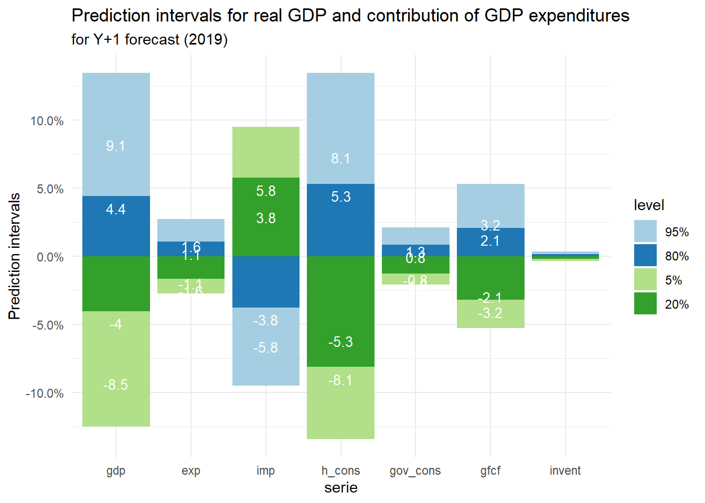

This page presents a macroeconomic model I developped for the Kenyan economy with the R language. Code is available here.
The model was estimated on Kenyan data while I did some consulting for the Kenyan National Treasury but the code could probably be easily adapted to other countries.
The model was developed from a policy maker perspective. This means the intended usage would be to provide insights to support choices in economic policy and public finance.
Knowing this, I think the model should fulfil 3 main objectives:
Provide reliable forecasts in the short-run (2-3 years).
Provide insights about the uncertainty around forecasts. Economic forecast are always uncertain: this can be due to data or modelling limitations but economic behaviors are anyway non-deterministic processes that have inherent uncertainty. A good policy decision framework should not only rely on a central prediction but also take into account other possible outcomes and their probabilities. It is not always easy to persuade a policy makers on the merits of this idea but I really believe that a statement like “there is a 40% that growth will be between 2% and 4%” is much more valuable than to say “it’s going to be 3%”.
Provide interpretable results. As it is going to inform discussions on policies, it is important to explain why we ended up with a specific forecast. When estimating the model, this means that we should not only base our modelling choices on statistical fit or forecasting performance but also make sure that there are always economic soundness behind our equations.
The main data used are the Kenya National Accounts and more specifically GDP by expenditure in constant prices (the demand side of real GDP), as demand-driven forecasting is a common approach for short-run forecasting .Data can be downloaded on the United nation website. Additional data on exchange rates, world and regional growth, oil prices, real interest rates come from other public sources like the World Bank website (see all links in the “data.R” file).
Data needs to be parsed in the two CSV files in the repository (“un_gdp_constant.csv” and “ext_data.csv”). Then we run the code from the “data.R” file to import and prepare datasets.
source('utils.R') # Load required libraries and functions
source('data.R') # Load and prepare dataLet’s plot real GDP growth since 1970 and contributions from each expenditure to growth:
plot(contribgdp_plot)Now that the data is loaded we can work on model estimation. I will estimate 3 different models that I will compare and discuss.
A baseline univariate model: just a naive univariate autoregressive model on GDP. This will be used as a benchmark for more elaborated approaches.
A pure statistical model without explicit economic assumptions. I will fit the best autoregressive model for each GDP expenditure without caring too much about economic soundness.
An economic model. Here I will try to balance statistical fit, forecasting performance with economic soundness and interpretability.
The detailed estimation processes for each model with all steps and specifications discussions can be found in the three files ‘baseline_model.R’, ‘stat_model.R’ and ‘eco_model.R’.
Quicker implementations of models estimations can be found in the file ‘model_functions.R’. For example, an estimation of the economic model is obtained using function emodel as follows:
source('model_functions.R') # Load required libraries and functions# Choose end of forecast year
end_pred <- 2030 # user choice for end of forecast
window=c(min(data$Year),max(data$Year),max(data$Year)+1,end_pred)
pred_len <- (end_pred - max(data$Year))
# Uncertainty parameters
int1 <- 80 # first confidence interval (in %)
int2 <- 95 # second confidence interval (in %)
# Estimate an economic model
eco_model <- quiet(emodel(data,exdata,window))
# Plot forecasts
autoplot(ts(eco_model[[3]]$gdp,start=window[1])) +
geom_vline(xintercept = window[3]-1.5, color='blue') +
annotate("text", x=window[3]+3, y=max(eco_model[[3]]$gdp), label= "Forecast", color='blue',size=5)+
labs(title = "Real GDP growth forecast from economic model",y='Real GDP growth')So far, the specifications of our models have been chosen based on the fit on historical data (with a penalization on complexity like in the AIC information criterion) and some economic sense.
To better assess the actual forecasting performances of these models, it is also important to have out-of-sample performance metrics to have an idea of how well the models would do if we were to use them in the future.
To do that we split our data into two sets. The 1st set (estimation window) will be used to estimate the models. We then forecast for the years of the 2nd set (forecasting window) to compare predictions with actual data and compute a metric to evaluate forecasting accuracy
There are many ways to perform out-of-sample evaluation (Fixed Estimation Window / Expanding Estimation Window / Rolling Estimation Window). Here, I think that we need to take into account that:
This is why the strategy I retain here is to estimate models on the window [1970 to Y]. Then forecast for years Y+1 to Y+3, that for Y+1 between 2007 and 2016 (Y+3 from 2009 to 2018).
We can use different metrics for accuracy:
The choice of metric should reflect forecaster’s preferences. Usually it is considered that large error are very costly so MSE is more relevant than just bias. Also note that MSE assume that forecasts errors costs are symetrics, wich is not always the case (ex: deflation often perceived as more costly than inflation).
This evaluation procedure is coded in a loop in the ‘perf.R’ file which compute thr 3 metrics for each model. (NB: this can take a moment, like a whole minute as there are many models to estimate)
source('perf.R') # Performance evaluation procedure
plot_grid(p1, p2, p3, labels=c("Bias", "Variance","MSE"), ncol = 3, nrow = 1)So here we come to a bit crual but common conclusion: the simple univariate model actually performs better in the out-of-sample evaluations.
This could be seen as a trade-off between interpretability and performance. It is indeed possible that some specifications we favored for their economic sense (ex: exports equation with exchange rate) are actually less accurate for forecasting.
It also shows that there is some room for improvement in the specifications design. Maybe additionnal data could also be considered.
To get an idea of the uncertainty around our forecasts, we compute here prediction intervals, that is intervals within which we expect predicted value to lie with an estimated probability.
To do this what wee need to do is to estimate the standard deviation of the residuals in the forecasting window, which depends on the specific design of each autoregressive model. Then, under the assumption that the residuals are uncorrelated and normally distributed (which we check that is actually reasonable for each model in our code), then we can compute a gaussian prediction interval in the form ± ϕ (1−α/2) σn(h) where ϕ (1−α/2) denotes the (1−α/2) quantile of the standard normal distribution function (1.96 for a 95% prediction interval). Everything is nicely explained in the Brockwell & Davis textbook for example.
The statistical and economic models raise an additionnal issue because GDP growth is not modelled and forecasted directly but is obtained as the aggregate of GDP expenditures. Adding up expenditures forecasts will give a good estimate of GDP forecast. But prediction intervals are more tricky due to the correlations between forecast errors. A practical way to evaluate a prediction interval for GDP is to use simulation and then infer the distribution.
The plot below shows the estimated densities for each component after N simulations and for the sum (real GDP).
source('risks.R') # Performance evaluation procedure
r <- risk_eco(eco_model,window,500) # estimate forecast uncertainty from 500 simulations
plot(r[[2]])
We can now compute the predictions intervals. The plot below shows prediction intervals for a one year ahead forecast (year 2019 here).
start_pred=window[3]
br <- as_tibble(r[[1]][,as.character(start_pred),]) # keep only start_pred
br <- bind_cols(serie=dimnames(r[[1]])[[1]],br) # add dimnames
dta <- eco_model[[2]]
br[,-1] <- br[,-1] * t((dta[dta$Year==start_pred,br$serie]/as.numeric(dta[dta$Year==start_pred,'gdp']))) # multiply by weight in gdp
for (i in 3:6){br[,i]<-br[,i]-br[,2]}
br <- select(br,-2) # get rid of 50%
br <- gather(br,key='level',value='risk',-serie)
br[br$serie=='imp','risk']<- -br[br$serie=='imp','risk']
br$level <- factor(br$level,ordered = T,levels=c('95%','80%','5%','20%'))
br$serie <- factor(br$serie,ordered = T,levels=c('gdp','exp','imp','h_cons','gov_cons','gfcf','invent'))
br$risk_lab <- 100*round(br$risk,3)
ggplot(data=br, aes(x=serie, y=risk, fill=level)) +
geom_bar(stat="identity")+
scale_fill_brewer(palette="Paired")+
scale_y_continuous(labels=scales::percent) +
geom_text(aes(y=(risk), label=risk_lab), vjust=1.6,color="white", size=3.5)+
labs(title = "Prediction intervals for real GDP and contribution of GDP expenditures",
y='Prediction intervals',
subtitle= "for Y+1 forecast (2019)")+
theme_minimal()
How to read this: we believe that there is a 60% chance that the real GDP growth in 2019 will lie between -4.3% and +4.6% from our central forecast.